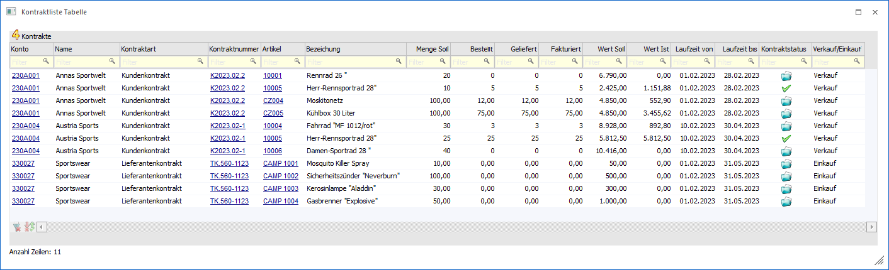
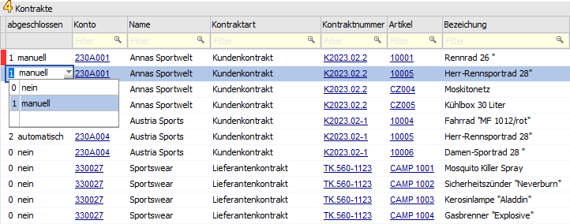
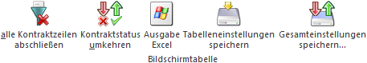

Durch die Anwahl des Ausgabe-Buttons "Ausgabe Tabelle" in der Auswertung Kontraktliste werden alle zuvor selektierten Kontraktzeilen in Form einer WinLine Tabelle dargestellt.
Hinweis
Die Basis der Kontraktzeilen in der Tabelle bildet immer die Selektion in der Kontraktliste. D.h. in der Tabelle kann dieses Datenmaterial nur weiter eingeschränkt werden.

In der Tabelle werden alle selektierten Kontraktzeilen angezeigt. Mit Hilfe der Suchzeile kann gezielt und komfortabel nach bestimmten Zeilen gesucht werden. Des Weiteren ist es möglich einzelne Kontraktzeilen manuell abzuschließen bzw. wieder aufleben zu lassen (siehe Button "Bearbeiten").
Ø Farbe
Sobald der Bearbeitungsmodus aktiviert wurde (siehe Button "Bearbeiten") steht die Spalte "Farbe" zur Verfügung. Hier wird durch eine Farbmarkierung auf nicht gespeicherte Änderungen hingewiesen.
Ø abgeschlossen
Nach Aktivierung des Bearbeitungsmodus (siehe Button "Bearbeiten") kann über diese Spalte der Kontraktstatus der Zeile angepasst werden. Hierbei ist zu beachten, dass Zeilen mit Status "2 - automatisch" nicht verändert werden können. Folgende Stati steht zur Verfügung:
ü 0 - nein
Es handelt sich um
eine offene Kontraktzeile. Solche Zeilen werden (abhängig von den
FAKT-Parameter) bei der Preisfindung berücksichtigt und im Kontrakte abbuchen zur Lieferung
vorgeschlagen.
ü 1 - manuell
Durch Hinterlegung
von "1 - manuell" wird die Kontraktzeile als "abgeschlossen" gekennzeichnet.
Solche Zeilen werden von der WinLine bei einer Preisfindung nicht
berücksichtigt. Bei einer möglichen Kontraktabbuchung wird die Menge automatisch
auf 0 gesetzt.
Achtung
Der Kontraktstatus von manuell abgeschlossenen Kontraktzeilen wird von der WinLine nicht mehr automatisch verändert! Dieses betrifft u.a. eine mögliche Umschlüsselung der FAKT-Parameter (Belege - Kontrakte) oder eine Mengenanpassung innerhalb des Kontrakts.
ü 2 - automatisch
Dieser Status
wird automatisch von der WinLine vergeben, wenn die Kontraktzeile mengenmäßig
erfüllt wurde. Um welche Menge es sich hierbei handeln soll (bestellt, geliefert
oder fakturiert) kann in den FAKT-Parametern (Belege - Kontrakte - Option
"Kontrakt ist erfüllt beim Erreichen der …") definiert werden.
Achtung
Sollte die Übererfüllung von Kontrakten erlaubt sein, so werden Kontraktzeilen nie automatisch abgeschlossen!
Beispiel

Ø Konto / Name / Kontraktart / Kontraktnummer / Artikel / Bezeichnung / Menge Soll / Wert Soll / Laufzeit von / Laufzeit bis
In diesen Spalten werden die Kontraktdaten der Kontraktzeile angezeigt.
Ø Menge Soll / Bestellt / Geliefert / Fakturiert
In diesen Spalten werden die Mengen gemäß Kontrakt und aller bereits getätigten Abnahmen dargestellt.
Ø Wert Soll / Wert Ist
An dieser Stelle werden die Werte des Kontrakts (Wert Soll) und der bereits erfassten Fakturen (Wert Ist) angezeigt.
Ø Kontraktstatus
In dieser Spalte wird der Status der Kontraktzeile mit Hilfe eines Icons dargestellt.
ü  - offen
- offen
Es handelt sich um eine nicht
abgeschlossene Kontraktzeile.
ü  - abgeschlossen
- abgeschlossen
Es handelt sich um eine
manuell oder automatisch abgeschlossene Kontraktzeile. Solche Zeilen werden bei
der Preisfindung nicht berücksichtigt, sowie im Kontrakte abbuchen nicht zur Lieferung
vorgeschlagen.
Ø Verkauf / Einkauf
Hier wird angezeigt, ob es sich um einen Einkauf- oder Verkaufskontrakt handelt.
Tabellenbuttons

Ø alle Kontraktzeilen abschließen
Sobald der Bearbeitungsmodus aktiviert wurde (siehe Button "Bearbeiten") können mit Hilfe dieses Buttons alle Kontraktzeilen mit Status "0 - nein" auf "1 - manuell" geändert werden (siehe auch Spalte "abgeschlossen").
Ø Kontraktstatus umkehren
Nach Aktivierung des Bearbeitungsmodus (siehe Button "Bearbeiten") kann des Status (siehe Spalte "abgeschlossen") umgekehrt werden.
Ø Ausgabe Excel
Durch Anwahl des Buttons "Ausgabe Excel" wird der Inhalt der Tabelle an Microsoft Excel übergeben.
Ø Tabelleneinstellungen speichern
Die Spalten einer Tabelle können grundsätzlich an beliebige Positionen verschoben, bzw. in der Breite entsprechend angepasst werden. Durch Anwahl des Buttons "Tabelleneinstellungen speichern" werden die Einstellungen benutzerspezifisch gespeichert und bei dem nächsten Aufruf des Programmpunktes wieder vorgeschlagen.
Ø Gesamteinstellungen speichern
Im Gegensatz zu "Tabelleneinstellungen speichern" können mit "Gesamteinstellungen speichern" mehrere Tabellenaufbauten gespeichert und nach Wunsch geladen werden. Zusätzlich werden Sonderfunktionen der Tabelle (z.B. "Spalte gruppieren") ebenfalls bei der Speicherung bedacht.
Buttons
Ø Anzeigen
Durch Anwahl des Buttons "Anzeigen" bzw. der Taste F5 werden alle Suchkriterien der Suchzeile aufgehoben und der Inhalt der Tabelle neu aufgebaut. Wird zusätzlich die SHIFT-Taste gedrückt, so bleiben die Suchkriterien erhalten und der Inhalt der Tabelle baut sich gefiltert neu auf.
Ø Ende
Mit Hilfe des Buttons "Ende" bzw. der Taste ESC wird das Fenster geschlossen.
Ø Bearbeiten
Bei Anwahl dieses Buttons wird der "Bearbeitungsmodus" aktiviert, d.h. bestehende Kontraktzeilen können abgeschlossen oder wieder geöffnet werden (siehe auch Spalte "abgeschlossen").
Hinweis
Standardmäßig wird die Tabelle in einem "Lesemodus" geöffnet, d.h. es können bestehende Kontraktzeilen kontrolliert werden, eine Änderung ist nicht möglich. Das Bearbeiten an dieser Stelle ist immer nur von einem Benutzer gleichzeitig möglich.
Ø Statusänderung speichern
Mit Hilfe dieses Buttons können die Änderung der Spalte "abgeschlossen" gespeichert werden.